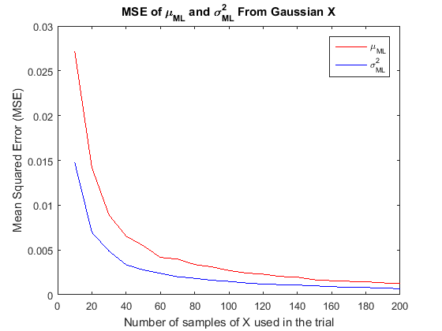

Machine Learning, MATLAB Mini-Project 1: Sequential Estimators
Dennis Gavrilov, Andrew Koe, and Miraj Patel
% Part 1a) Sequential Maximum Likelihood (ML) Estimate for a Gaussian R.V. clc; clear all; close all; % Randomly choose a mean between 0-5, and Variance between 0-2 unknownMu = rand(1)*5; unknownSigma = rand(1)*sqrt(2); unknownVariance = unknownSigma^2; numberIterations = 1000; numberofTrials = 20; MLE_means = zeros(numberofTrials, numberIterations); MLE_variances = zeros(numberofTrials, numberIterations); tic; for i = 1:numberIterations for t = 1:numberofTrials % Set number of samples to 10*iteration number N = 10*t; muML = 0; Xsamples = zeros(N, 1); % Generate each sample for j = 1:N x = normrnd(unknownMu, unknownSigma); Xsamples(j) = x; % Adjust the sequential ML mean (mu) estimator based on % previous mean and the current sample, applying a weight % corresponding to the sample number muML = muML + (1/j)*(x - muML); % The seq. ML mean estimator does not rely on the previous % samples, just the current sample and previous estimation end % Insert mean and variance found for the trial and iteration # MLE_means(t, i) = muML; % The ML variance, however, does require knowledge of all samples MLE_variances(t, i) = (1/N)*(sum((Xsamples-muML).*(Xsamples-muML))); end end toc % Compute Mean Squared Error of each trial MSE_mu = sum((MLE_means - unknownMu).^2, 2)/numberIterations; MSE_variance = sum((MLE_variances - unknownVariance).^2, 2)/numberIterations; t_sample = 10:10:(10*numberofTrials); figure; plot(t_sample, MSE_mu, 'r', t_sample, MSE_variance, 'b') title('MSE of \mu_{ML} and \sigma_{ML}^{2} From Gaussian X') legend('\mu_{ML}', '\sigma_{ML}^{2}') xlabel('Number of samples of X used in the trial') ylabel('Mean Squared Error (MSE)')
Elapsed time is 70.651374 seconds.